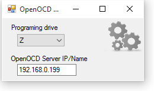

Welcome to the OpenOCD med Programmer .

The program that makes it easy for mbed to program a device using the Open On-Chip Debugger
How it works
The program program creates a virtual folder on your pc The files stored on the virtual drive wil be used by the OpenOCD to program your device Alternatively you could drag and drop the files you would like to be programmed.
HW Example
Programing the BLE400 (NRF51822 module) using RaspberryPI 2 and OpenOCD
Downloads
Windows setup
Source for the release is located at releases